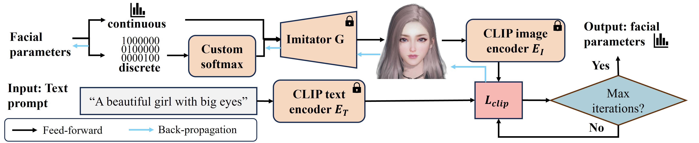
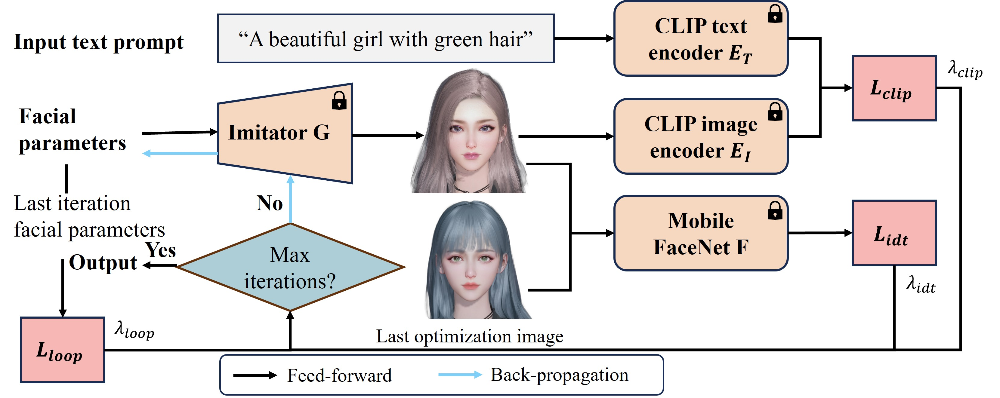
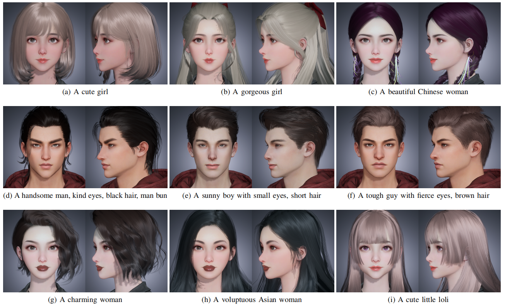

Zero-Shot Text-to-Parameter Realtime Translation for Game Character Auto-Creation and Identity Consistency Editing
Abstract
In the field of Role-Playing Games (RPGs), recent interest is shifting attention towards the creation of 3D game characters using textual descriptions instead of the direct customization that requires adjusting hundreds of parameters, recognizing that text-based methods lower the barrier to entry. This paper introduces a Text-to-Parameter Editable model (T2PE) that allows players to rapidly obtain high-quality game characters aligned with their textual descriptions. T2PE leverages supervision from CLIP to optimize continuous and discrete game character parameters simultaneously. This differs from existing Text-to-Parameter (T2P) models, which rely on evolutionary search algorithm interacting with the game engine to optimize discrete parameters. We also propose a method for game character editing that allows for minor modifications to previously generated game character by adjusting textual prompts while retaining the majority of their original features. Experimental results demonstrate that our proposed model not only generates higher quality 3D game characters compared to T2P models but also substantially reduces latency. We observe that T2PE achieves 26x faster inference times and 3.3% increase in CLIP score on lower TFLOPS devices. To the best of our knowledge, T2PE is the first among its kind to offer an approach for in-game character editing. Building upon this, we develop Fast-T2PE, an end-to-end translator trained using text-parameter pairs obtained from T2PE, which facilitates even faster generation of game characters. Experimental results show that Fast-T2PE further reduces response latency by 62.5% compared with T2PE.

Fig. 1: The first row are game characters created by the proposed T2PE method using celebrities as prompts, the second row
are the edited characters (change hair color) based on the characters in the first row. The front view and side view are shown
for each character.
The 3D effect of Fig. 1 in the paper is shown below.
Taylor Swift


Scarlett Johansson


Leonardo DiCaprio


Model
Imitator
Our imitator G is consists of several transposed convolution layers which is similar to generator of DC-GAN, it takes in both continuous parameters and discrete parameters and outputs the front view of the game character. Our purpose in training imitator is to make the process of parameters to image differentiable, since the rasterization part of traditional rendering pipeline is not differentiable. We sampled a substantial amount of parameters from a multidimensional uniform distribution u(x) and trained the imitator as a regression problem. The loss function of the training step is the pixel wise L1 distance between the ground truth image and the image rendered by the imitator.
The architecture and detailed configuration of the imitator are shown below.
Optimization pipeline
First the continuous part of facial parameters are initialized to 0.5 while the discrete part are initialized to 0, then the discrete part of facial parameters are processed with the custom softmax function. The processed facial parameters are fed into our pretrained imitator to obtain the rendered image of the corresponding game character. Subsequently, the image is encoded into clip embedding using clip image encoder while the text prompt is encoded into clip text embedding using clip text encoder. We calculate our clip similarity loss function LCLIP based on the similarity of the clip text embedding and the clip image embedding. By utilizing this loss function LCLIP, we iteratively backpropagate and update the facial parameters until the maximum number of iterations is reached. This process ultimately yields facial parameters that align with the input text.
The optimization pipeline is shown below.
Editing pipeline
In order to ensure identity consistency while making the edited character align with the player’s input text prompt, we use a lightweight network called Mobile Face Net trained based on ArcFace as our backbone to extract image identity features. We can calculate the cosine face similarity Lidt based on the extracted features. Besides, we add a loop back loss Lloop to encourage the parameters converge to the regions for which one of the true parameters resides. The ultimate loss function consists of these three loss functions combined with specific coefficients. We iteratively backpropagate and update the facial parameters until the maximum number of iterations is reached. This process ultimately yields facial parameters that align with the input text and maintain consistency with the identity of the created characters.
The editing pipeline is shown below.
Translator
In order to improve the efficiency of game character creation and provide faster response for gamers, we propose a translator model. We use the T2PE model proposed above to generate 100w text-parameters pairs. Then we use these text-parameters pairs to train a multi-layer perceptron as our translator T to map the input text embeddings (the output of CLIP text encoder) to facial parameters x.
The details of our translator are shown below.
Data
The continuous parameters correspond to translation, rotation, and scaling of facial features of the game character, whereas the discrete parameters are associated with customizable attributes such as hairstyle, hair color, makeup, and so on. We selecte five discrete parameters(hairstyle, hair color, lip makeup, skin tone, and eyebrow shape) and encoded them using one-hot encoding. These onehot encodings are concatenated with the continuous parameters, resulting in continuous parameters with a dimensionality of 176, and the final concatenated facial parameters had a dimensionality of 281. For imitator pretraining, we sampled 20w pairs of facial parameters and game character front face images from a multidimensional uniform distribution. For translator training, we generate 100w text prompts based on user habits and input them into the T2PE model proposed above, resulting in 100w text-parameters pairs. We use the obtained data to train our end-to-end translator,
Experiments
Text Driven Game Character Auto Creation
In our optimization procedure (T2PE), the in-game character’s facial features evolve from an initial normal face to gradually align with the descriptive attributes provided by text prompts. Since the optimization procedure concurrently optimizes both continuous and discrete parameters, it facilitates rapid generation of game characters. While our translator (fast-T2P) is trained through text-parameters pairs, it can directly generate facial parameters from text prompts and achieve faster generation speed.
The 3D game characters created by our optimization procedure (T2PE) and our translator (fast-T2P) are shown below.

A handsome man, kind eyes, black hair, man bun


A sunny boy with small eyes, short hair


A tough guy with ferce eyes, brown hair


A cute girl


A gorgeous girl


A beautiful Chinese woman


A charming woman


A voluptuous Asian woman


A cute little loli


Comparison with Other Methods
We compare our method with T2P, AvatarCLIP,TADA, Fantasia3D and DreamFusion. The results are shown below.

Jackie Chan


Beyonce


The comparison results of indicators are shown below.

Game Character Editing
We perform two consecutive edits on the game characters created by T2PE. With Lidt and Lloop, we can optimize both continuous and discrete parameters uniformly. It illustrates our ability to edit various features of game characters multiple times while preserving the character’s identity, the face similarity between the edited character and the original game character is consistently above 95%.
The effect is shown below.

Short hair, red hair


Long straight hair


Brown hair


Cute girl, red hair


hair with bands


Green hair


Pink hair, high bun


Small eyes


Big eyes
Blue, wavy hair


Small nose


Broad nose


Yellow hair, double bun


Black skin


White skin